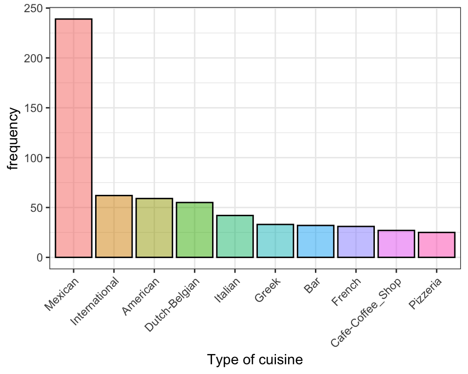
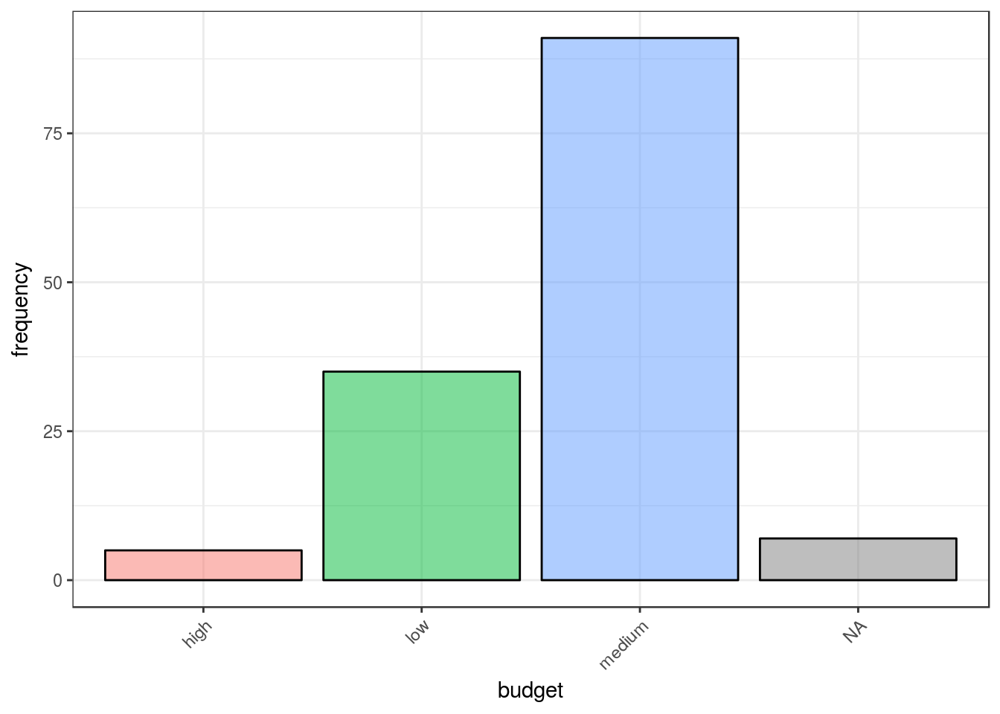
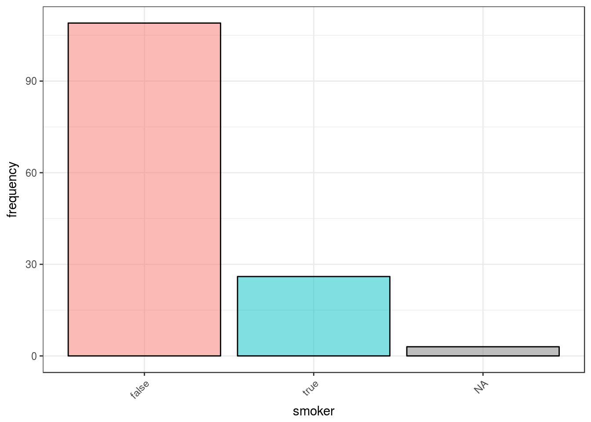
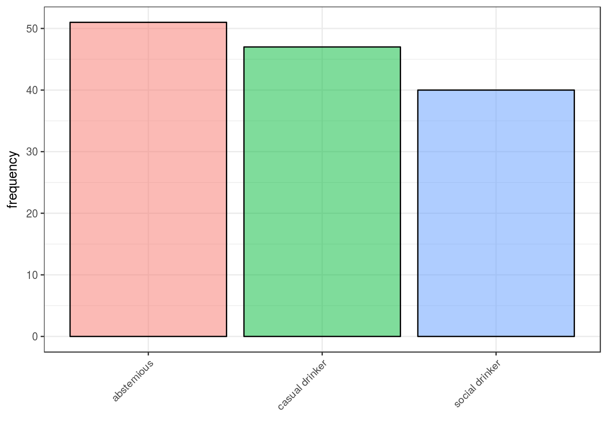

Discovering users’ eating preferences
In this post I play around with R to investigate the users’ preferences on restaurants. Somewhere on the net, I found a set of 3 datasets containing information on users, restaurants on the users’ ratings on those restaurants. In my R lessons, they often serve as an example of data manipulation using the tidyverse tools.
Data Preparation
After we load the R packages we will need:
require(tidyverse)and the datasets:
chefmozcuisine <- read_delim("data/chefmozcuisine.csv", delim = ",", col_names = T)
userprofile <- read_delim("data/userprofile.csv", delim = ",", col_names = T)
rating_final <- read_delim("data/rating_final.csv", delim = ",", col_names = T)First we need to manipulate the data a bit. For example we want to make sure that IDs are character instead of numeric so that we do not accidentally calculate anything on them:
rating_final <- rating_final %>% mutate(placeID = as.character(placeID))
chefmozcuisine <- chefmozcuisine %>% mutate(placeID = as.character(placeID))Another frequent issue is missing data. In these tabes missingness is coded as “?” which is not the missingness symbol in R. Hence with a small additional manipulation:
userprofile <- userprofile %>% na_if("?")Data exploration
In order to be able to better understand and interpret the answers to our questions, in this section we may start understanding what kind of data we are working with is available: what kind of users and what kind of restaurants do we have in the datasets?
Let us first focus on restaurants. The dataset contains the restaurants’ id and the type of cusine. It contains info on 916 different restaurants and there are Spanish, Italian, Latin_American, Mexican, Fast_Food, Burgers, Dessert-Ice_Cream, Hot_Dogs, Steaks, Asian, International, Mongolian, Vegetarian, Brazilian, Cafe-Coffee_Shop, Cafeteria, Contemporary, Deli-Sandwiches, Diner, Japanese, Sushi, Seafood, Chinese, Bar, Bar_Pub_Brewery, Pizzeria, Mediterranean, American, Family, Caribbean, African, Breakfast-Brunch, Regional, Afghan, Bakery, Game, Armenian, Vietnamese, Korean, Thai, Barbecue, Polish, Dutch-Belgian, French, German, Southwestern, Persian, Ethiopian, Juice, Soup, Continental-European, Greek, Southern, Eastern_European, California, Bagels, Turkish, Organic-Healthy, Fine_Dining different types of cuisine. Let us focus only on the 10 most frequent types of cusine:
top10_cuisine <- chefmozcuisine %>% group_by(Rcuisine) %>%
summarise(freq = n()) %>%
arrange(desc(freq)) %>%
slice(1:10)
ggplot(data = top10_cuisine) +
geom_bar(aes(x=Rcuisine, y = freq, fill = Rcuisine), stat = "identity") +
labs(x = "Type of cuisine", y = "frequency") +
theme_bw() +
theme(legend.position="")
Mexican seems much more popular than any other type of cusine as there are nearly 250 different restaurants.
The users’ dataset contains info on 138 users. Most of the users are students, either low or medium budget, does not smoke and like drinking when they go out:
ggplot(data = userprofile) +
geom_bar(aes(x = activity, fill = activity)) +
theme_bw() +
theme(legend.position="")
ggplot(data = userprofile) +
geom_bar(aes(x = budget, fill = budget)) +
theme_bw() +
theme(legend.position="")
ggplot(data = userprofile) +
geom_bar(aes(x = smoker, fill = smoker)) +
theme_bw() +
theme(legend.position="")
ggplot(data = userprofile) +
geom_bar(aes(x = drink_level, fill = drink_level)) +
theme_bw() +
theme(legend.position="")
Answering questions
Now we are ready to combine all the tables and use them to answer questions.
Which restaurant has got the best reviews?
tab <- rating_final %>%
group_by(placeID) %>%
count(rating) %>%
mutate(prop = prop.table(n))
knitr::kable(tab %>%
head(10), "html") %>%
kableExtra::kable_styling(full_width = F, font_size = 11, position = "center")| placeID | rating | n | prop |
|---|---|---|---|
| 132560 | 0 | 2 | 0.50 |
| 132560 | 1 | 2 | 0.50 |
| 132561 | 0 | 1 | 0.25 |
| 132561 | 1 | 3 | 0.75 |
| 132564 | 1 | 3 | 0.75 |
| 132564 | 2 | 1 | 0.25 |
| 132572 | 0 | 3 | 0.20 |
| 132572 | 1 | 9 | 0.60 |
| 132572 | 2 | 3 | 0.20 |
| 132583 | 0 | 1 | 0.25 |
Which restaurant has got the best reviews in terms of average rating?
tab <- rating_final %>%
group_by(placeID) %>%
summarise_at(vars(rating, food_rating, service_rating),
funs(mean, n())) %>%
arrange(desc(rating_n), desc(rating_mean), desc(food_rating_mean), desc(service_rating_mean)) %>%
left_join(chefmozcuisine)
knitr::kable(tab %>%
head(10), "html") %>%
kableExtra::kable_styling(full_width = F, font_size = 11, position = "center")| placeID | rating_mean | food_rating_mean | service_rating_mean | rating_n | food_rating_n | service_rating_n | Rcuisine |
|---|---|---|---|---|---|---|---|
| 135085 | 1.333333 | 1.472222 | 1.1666667 | 36 | 36 | 36 | Fast_Food |
| 132825 | 1.281250 | 1.343750 | 0.9375000 | 32 | 32 | 32 | Mexican |
| 135032 | 1.178571 | 1.071429 | 1.0714286 | 28 | 28 | 28 | Cafeteria |
| 135032 | 1.178571 | 1.071429 | 1.0714286 | 28 | 28 | 28 | Contemporary |
| 135052 | 1.280000 | 1.160000 | 1.1600000 | 25 | 25 | 25 | Bar |
| 135052 | 1.280000 | 1.160000 | 1.1600000 | 25 | 25 | 25 | Bar_Pub_Brewery |
| 132834 | 1.000000 | 1.120000 | 0.8800000 | 25 | 25 | 25 | Mexican |
| 135038 | 1.208333 | 1.166667 | 0.9583333 | 24 | 24 | 24 | NA |
| 135060 | 1.136364 | 1.045454 | 1.2727273 | 22 | 22 | 22 | Seafood |
| 135062 | 1.238095 | 1.238095 | 1.0952381 | 21 | 21 | 21 | NA |
What is the favourite restaurant for smokers?
tab <- userprofile%>%
filter(smoker == "true") %>%
left_join(rating_final) %>%
group_by(placeID) %>%
summarise_at(vars(rating_mean = rating, food_rating_mean = food_rating,
service_rating_mean = service_rating),
funs(mean, n())) %>%
arrange(desc(rating_mean), desc(food_rating_mean), desc(service_rating_mean)) %>%
left_join(chefmozcuisine)
knitr::kable(tab %>%
head(10), "html") %>%
kableExtra::kable_styling(full_width = F, font_size = 11, position = "center")| placeID | rating_mean | food_rating_mean | service_rating_mean | rating_n | food_rating_n | service_rating_n | Rcuisine |
|---|---|---|---|---|---|---|---|
| 132660 | 2 | 2 | 2 | 1 | 1 | 1 | NA |
| 132755 | 2 | 2 | 2 | 1 | 1 | 1 | Mexican |
| 132767 | 2 | 2 | 2 | 1 | 1 | 1 | Vietnamese |
| 132830 | 2 | 2 | 2 | 1 | 1 | 1 | NA |
| 132884 | 2 | 2 | 2 | 1 | 1 | 1 | NA |
| 132958 | 2 | 2 | 2 | 1 | 1 | 1 | American |
| 134986 | 2 | 2 | 2 | 2 | 2 | 2 | International |
| 134999 | 2 | 2 | 2 | 1 | 1 | 1 | Japanese |
| 135000 | 2 | 2 | 2 | 1 | 1 | 1 | NA |
| 135019 | 2 | 2 | 2 | 1 | 1 | 1 | Bar |
What is the favourite restaurant for people with a low budget?
tab <- userprofile %>%
filter(budget == "low") %>%
left_join(rating_final) %>%
group_by(placeID) %>%
summarise_at(vars(rating_mean = rating, food_rating_mean = food_rating,
service_rating_mean = service_rating),
funs(mean, n())) %>%
arrange(desc(rating_mean), desc(food_rating_mean), desc(service_rating_mean)) %>%
left_join(chefmozcuisine)
knitr::kable(tab %>%
head(10), "html") %>%
kableExtra::kable_styling(full_width = F, font_size = 11, position = "center")| placeID | rating_mean | food_rating_mean | service_rating_mean | rating_n | food_rating_n | service_rating_n | Rcuisine |
|---|---|---|---|---|---|---|---|
| 132884 | 2 | 2.00 | 2.0 | 2 | 2 | 2 | NA |
| 132958 | 2 | 2.00 | 2.0 | 1 | 1 | 1 | American |
| 134975 | 2 | 2.00 | 2.0 | 1 | 1 | 1 | NA |
| 134996 | 2 | 2.00 | 2.0 | 1 | 1 | 1 | NA |
| 135049 | 2 | 2.00 | 2.0 | 1 | 1 | 1 | Seafood |
| 135055 | 2 | 2.00 | 2.0 | 2 | 2 | 2 | Mexican |
| 132608 | 2 | 2.00 | 1.5 | 2 | 2 | 2 | Mexican |
| 132723 | 2 | 2.00 | 1.5 | 2 | 2 | 2 | Mexican |
| 132755 | 2 | 2.00 | 1.5 | 2 | 2 | 2 | Mexican |
| 135075 | 2 | 1.75 | 1.5 | 4 | 4 | 4 | Seafood |